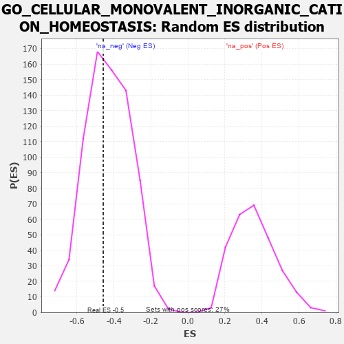

| | | Dataset | 7d |
| Phenotype | NoPhenotypeAvailable |
| Upregulated in class | na_neg |
| GeneSet | GO_CELLULAR_MONOVALENT_INORGANIC_CATION_HOMEOSTASIS |
| Enrichment Score (ES) | -0.45732996 |
| Normalized Enrichment Score (NES) | -1.062678 |
| Nominal p-value | 0.41450068 |
| FDR q-value | 0.7946785 |
| FWER p-Value | 1.0 |
Table: GSEA Results Summary
 Fig 1: Enrichment plot: GO_CELLULAR_MONOVALENT_INORGANIC_CATION_HOMEOSTASIS
Fig 1: Enrichment plot: GO_CELLULAR_MONOVALENT_INORGANIC_CATION_HOMEOSTASIS
Profile of the Running ES Score & Positions of GeneSet Members on the Rank Ordered List
| PROBE | GENE SYMBOL | GENE_TITLE | RANK IN GENE LIST | RANK METRIC SCORE | RUNNING ES | CORE ENRICHMENT | | 1 | CLN5 | | | 346 | 0.751 | 0.0632 | No |
| 2 | ROGDI | | | 2633 | 0.207 | -0.1946 | No |
| 3 | CLN6 | | | 2847 | 0.177 | -0.1963 | No |
| 4 | CHP1 | | | 3089 | 0.138 | -0.2069 | No |
| 5 | KCTD7 | | | 3417 | 0.088 | -0.2356 | No |
| 6 | MAPK3 | | | 3589 | 0.062 | -0.2483 | No |
| 7 | LRRK2 | | | 4467 | -0.087 | -0.3461 | No |
| 8 | CLCN3 | | | 4678 | -0.134 | -0.3534 | No |
| 9 | DMXL1 | | | 5004 | -0.198 | -0.3661 | No |
| 10 | RAB7A | | | 5302 | -0.271 | -0.3650 | No |
| 11 | PPT1 | | | 6038 | -0.485 | -0.3884 | Yes |
| 12 | CLN3 | | | 6580 | -0.699 | -0.3570 | Yes |
| 13 | CFTR | | | 7143 | -1.030 | -0.2813 | Yes |
| 14 | GRN | | | 7319 | -1.194 | -0.1336 | Yes |
| 15 | TTPA | | | 7575 | -1.516 | 0.0498 | Yes |
Table: GSEA details [plain text format]

Fig 2: GO_CELLULAR_MONOVALENT_INORGANIC_CATION_HOMEOSTASIS: Random ES distribution
Gene set null distribution of ES for GO_CELLULAR_MONOVALENT_INORGANIC_CATION_HOMEOSTASIS